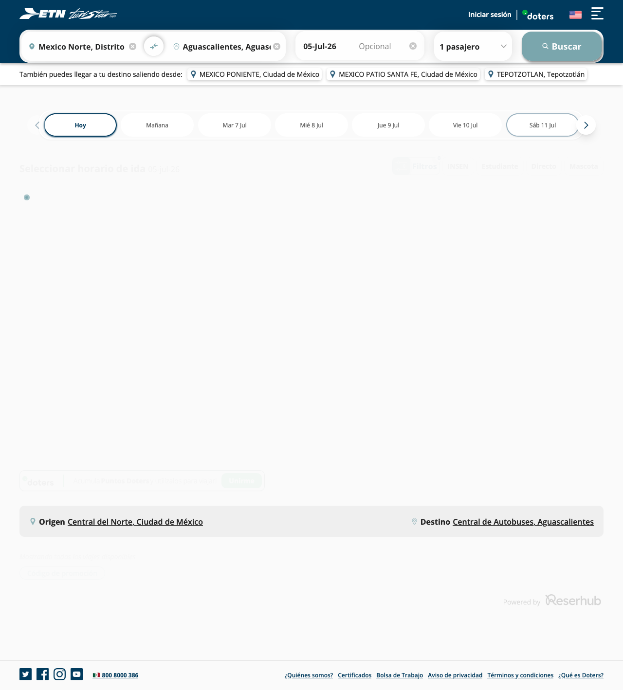
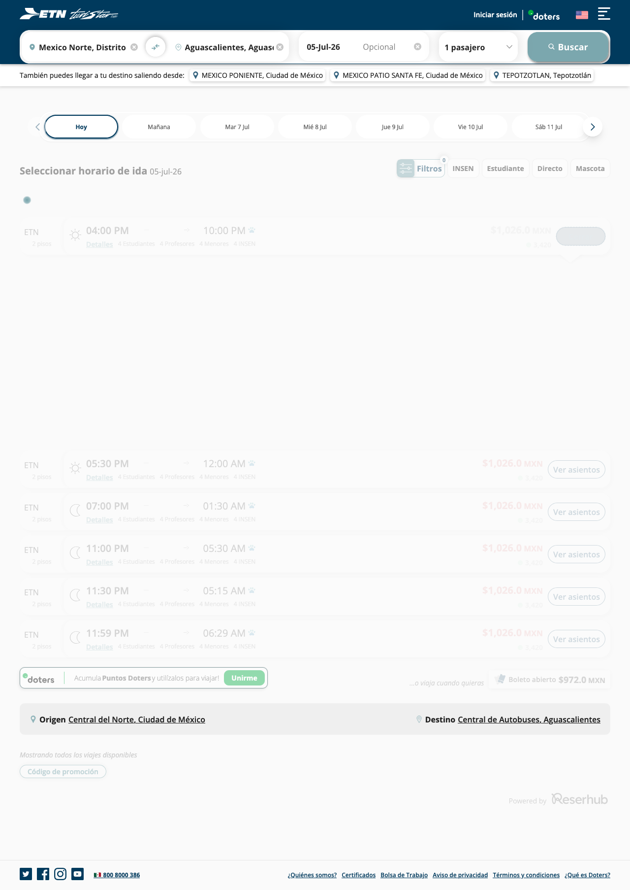
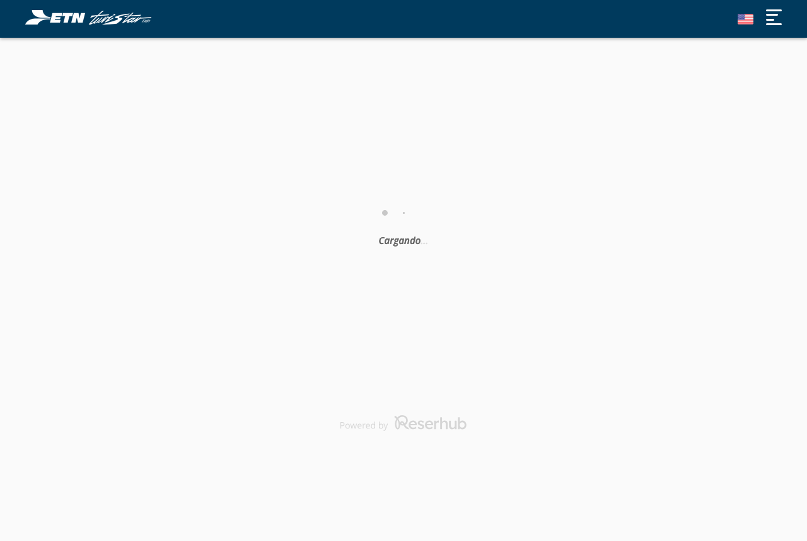
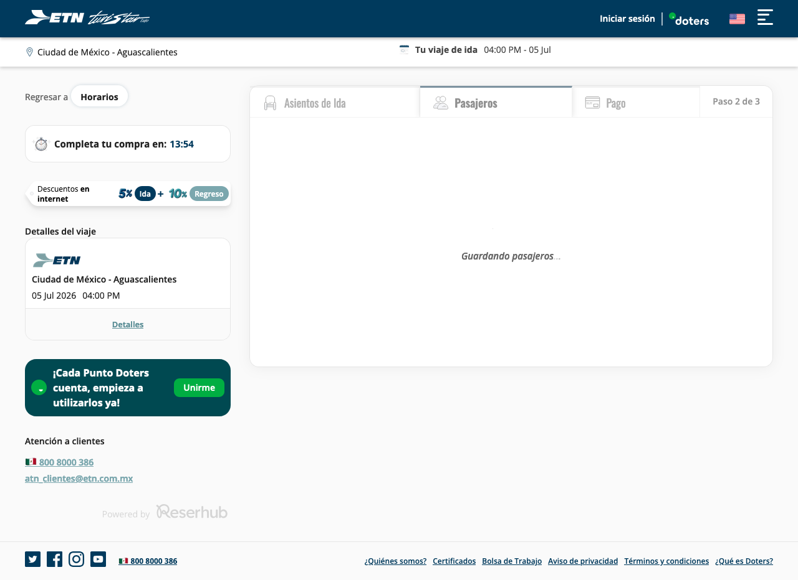
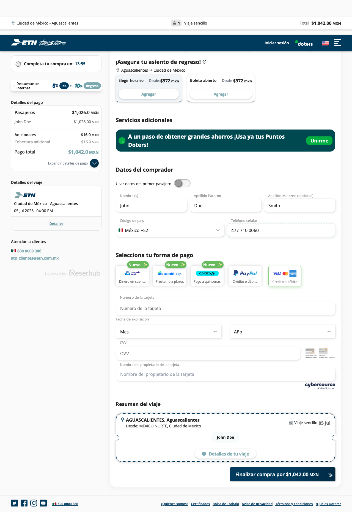
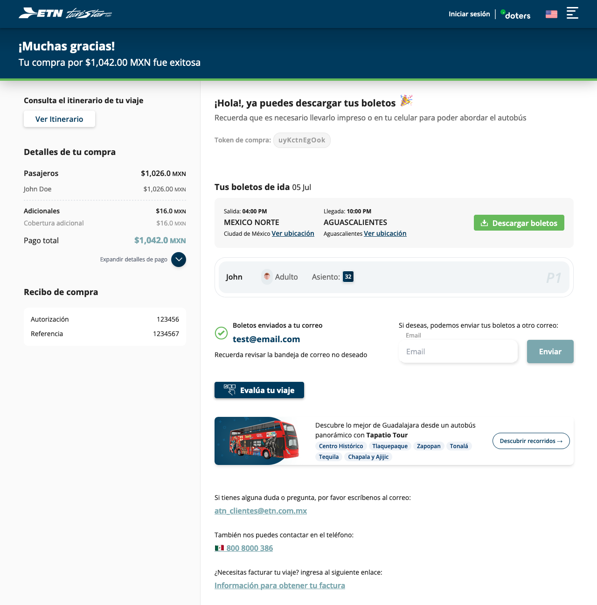

| Ruta | Mexico Norte, Distrito Federal → Aguascalientes, Aguascalientes |
| Fecha | 05 Jul 2026, salida 04:00 PM |
| Pasajeros | 1 Adulto (John Doe) |
| Asiento | 32 |
| Seguro | Sin seguro (opción "Viajero Protegido" no seleccionada) |
| Método de pago | Tarjeta (sandbox Cybersource, 4111 1111 1111 1111) |
| Total | $1,042.00 MXN |
| Resultado | "¡Muchas gracias! Tu compra fue exitosa" — boletos enviados por correo, descarga disponible |
etn-sbx.resertravel.com ya usa un
calendario nuevo (react-day-picker). Se corrigió la detección del
calendario en el módulo de búsqueda del repo de pruebas (retrocompatible
con el picker anterior) y la corrida pasó completa, incluyendo el llenado
real del formulario de tarjeta (iframe seguro de Cybersource) vía la
automatización nativa de Playwright.
Origen Mexico Norte (Ciudad de México) → destino Aguascalientes, 05-Jul-26. Resultados de búsqueda cargando.

Corrida seleccionada; mapa de asientos disponible mostrado inline.

Asiento 32 confirmado.

Formulario de pasajero (Adulto, John Doe) llenado.

Datos del comprador llenados, previo a la pantalla de pago.

"¡Muchas gracias! Tu compra por $1,042.00 MXN fue exitosa" — boletos enviados por correo, asiento 32, opción de descarga de boletos disponible.
